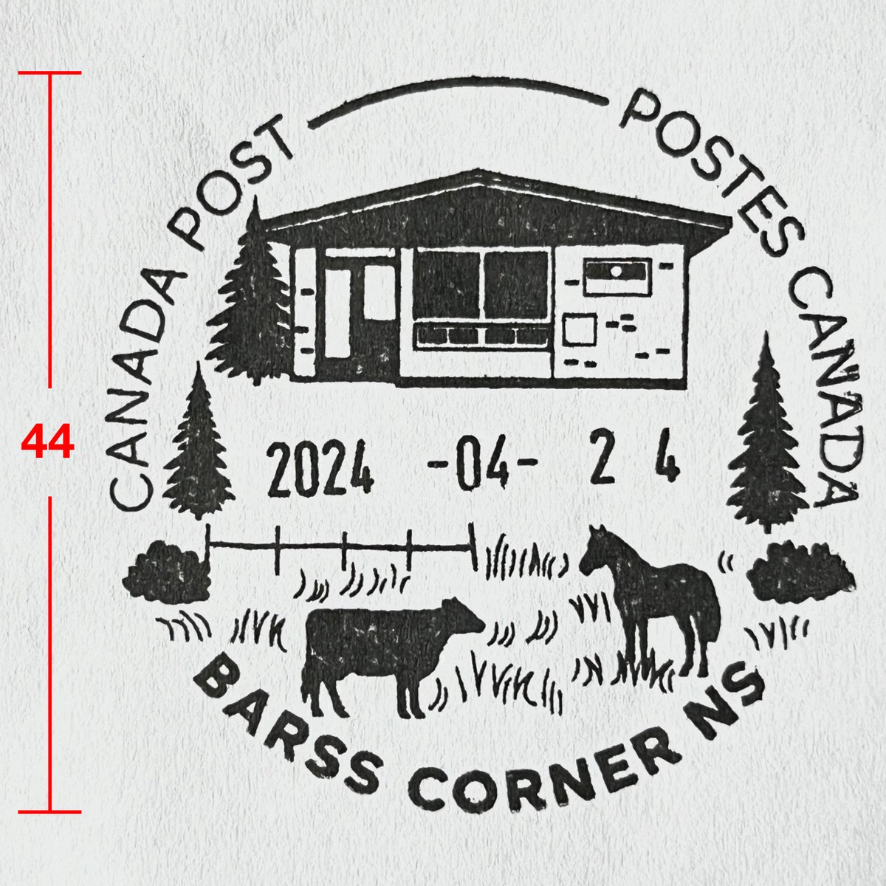

Barss Corner PO pictorial cancel
Barss Corner post office, trees, cow, horse
- Status
- Active
- Run dates
- 2024-01-01 to 2035-12-31
- Design
- Barss Corner post office, trees, cow, horse
- Ink colour
- Black
- Designer
- Unknown
- Post office
- Barss Corner PO
895 Barss Corner Rd
Barss Corner, NS
B0R 1A0 - Subjects
- architecture, building, post office, plant, tree, animal, mammal, cow, horse
Collect it by mail. Send your stamped covers, with a stamped return envelope, to the post office address above. How to collect pictorial cancels by mail · en français
 Bridgewater STN MainHistoric Since / Historique depuis / 1899
Bridgewater STN MainHistoric Since / Historique depuis / 1899 Lunenburg POBoat
Lunenburg POBoat Middleton PO2012
Middleton PO2012 Middleton PO2021
Middleton PO2021